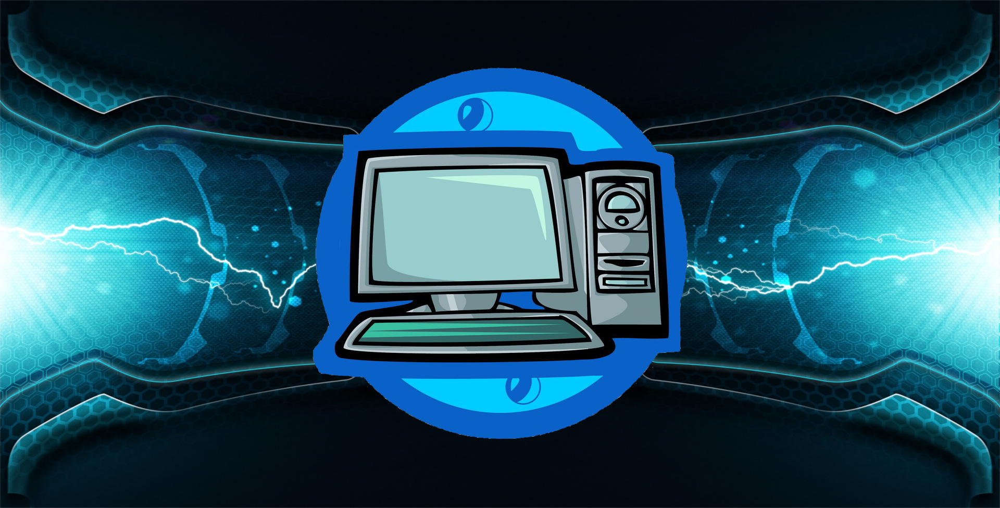

Bine ati venit pe Noutati Informatice!
Noutati Informatice este un site care te tine la curent cu toate stirile legate de tehnologie.

Pentru a naviga pe acest site trebuie sa dati click pe ramura care va intereseaza si veti fi trimis la noutatile legate de acel subiect. De asemenea, mai jos exista o scurta descriere pentru a va face o idee despre fiecare subiect despre care doriti sa aflati mai multe.
Programare
Programarea este dispunerea cronologică a unor mișcări, operații, acțiuni sau activități astfel încât în finalul perioadei să se realizeze o stare posibilă a unui sistem. Programarea informatică este o activitate informatică de elaborare a produselor-program, a programelor (software) necesare activităților realizate cu ajutorul calculatorului. Programarea informatică conține următoarele subactivități: specificarea, proiectarea, implementarea, documentarea și întreținerea produsului program.
Ultimele Noutati Din Programare
Ultimele Noutati Din Programare
Robotica
Robotica este știința care se ocupă cu tehnologia, proiectarea și fabricarea roboților. Robotica necesită cunoștințe de electronică, mecanică și programare, iar persoana care lucrează în acest domeniu a ajuns să fie cunoscută ca robotician. Denumirea de robot a fost introdusa pentru prima oara de către Karel Čapek în anul 1921 în lucrarea sa "Roboții universali ai lui Rossum", în 1921 plecând de la cuvântul ROBOTA, munca, activitate de rutina, preluat de către Isaac Asimov, în povestirea științifico-fantastică "Fuga în cerc". Robotii sunt mecanisme autonome sau controlabile.
Ultimele Noutati Din Robotica
Ultimele Noutati Din Robotica
Tehnologie
Tehnologia (engleză technology, franceză technologie) este ansamblul metodelor, proceselor, operațiilor făcute sau aplicate asupra materiilor prime, materialelor și datelor pentru realizarea unui anumit produs industrial sau comercial. Ingineria aplică imaginația, judecata și disciplina intelectuală cunoștințelor umane existente pentru a crea sau folosi tehnologia în mod util și eficient. Importanța tehnologiei pentru dezvoltarea economică este larg recunoscută, având în vedere impactul pe care îl poate avea tehnologia asupra succesului, supraviețuirii sau insuccesului activității economice a companiilor, în special într-un mediu de concurență intensivă și globală.
Ultimele Noutati Din Tehnologie
Ultimele Noutati Din Tehnologie